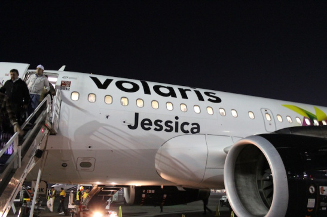

Volai | Agrolašmuo Volai skirti suspausti paviršinį dirvos sluoksnį mažame gylyje, pagrinde sėjant javus, kukurūzus ir burokus. Volų naudojimas yra labai svarbus agrotechninis veiksmas nuo kurio ženkliai priklauso apdirbamų laukų kokybė. Nauda kurią duoda...
Volai - UAB Margučiai Naudota žemės ūkio technika, padargai - volai. Detalesnė informacija ir nuotraukų galerija internetinėje svetainėje agrolasmuo.lt Susisiekite.
Volai žemės ūkio technika - Skelbiu.lt Jūsų žemės ūkiui AB LYTAGRA siūlo AMAZONE dirvos ruošimo techniką. Skutikliai, kultivatoriai ir volai Jūsų ūkio dirvos ruošimui, visiems Jūsų ūkio poreikiams.
volai skelbimai - Skelbiu.lt Masažiniai volai sportui, siekiantiems sveiko ir gražaus kūno . Kokybiški ir patvarūs masažiniai voleliai internetu, parduodami žema kaina - pigiai .
Volai nuoma | Storent UAB Universalūs volai skirti tiek asfaltui tiesti, tiek ir gruntui sutankinti. Katalogas . 01 - Žemės darbų technika; 02 - Teleskopiniai ir šakiniai krautuvai
Volai. | Reabilitacijai, slaugai, sportui. Neįgaliųjų ... Masažiniai volai bus nepamainomas įrankis raumenų masažui, tempimui, taip pat ir norint stimuliuoti akupunktūrinius taškus. Šis volas kūną atpalaiduoja palaipsniui, efektyviai mažina įtampą. Masažinio volo panaudojimo galimybės plačios: giliųjų audinių masažui, taip pat atpalaidavimui, jogai, pilatesui, stabilizavimo ...
Volai, Žemės ūkio padargai | Autoplius.lt Jūs esate čia Sportui namuose - Volai.. Apie mus. Teida – daugiau nei 25 metus dirbanti kompanija, teikianti klientams kokybiškus ir modernius reabilitacijos, slaugos, sporto ir sveikatingumo gaminius, taip pat neįgaliesiems skirtą techniką.
Rexius ir Rollex - volai, didinantys jūsų derlių Rekvizitai UAB Margučiai Įmonės kodas: 301400534 PVM kodas: LT100003668814 Margučių g. 3, Margučių k., Miežiškių sen., Panevėžio raj., LT-38100
Volai žemės ūkio technika - Skelbiu.lt
2020.10.29 05:06

X Dėl geresnės Skelbiu.lt paslaugų kokybės naudojame slapukus (angl. cookies). Naršydami toliau, patvirtinate, kad sutinkate su slapukais. Tai bet kada galėsite atšaukti, pakeisdami nustatymus. Skelbiu.lt slapukų politika . Lankomiausias skelbimų portalas LT RU ( 0 ) Įsiminti skelbimai ( 0 ) Peržiūrėti skelbimai Paieškos ( 0 ) Prisijungti Registruotis Volai, Žemės ūkio technika (86) Gauti naujus skelbimus: Ekrane El. paštu + Įdėti skelbimą Įsiminti skelbimai (0) Skelbimų: 86 Atnaujinti viršuje Naujausi viršuje Atnaujinti viršuje Pigiausi viršuje Brangiausi viršuje
NEPRALEISKITE NAUJŲ SKELBIMŲ
Volai, Žemės ūkio technika
Gaukite naujus skelbimus į ekraną Gaukite naujus skelbimus el. paštu Šiauliai prieš 1 val.
Vaderstad Volai ir jų dalys, dirvos tankinimo
Nauja / naudota: Naudota. Tipas: Dirvos tankinimo volai. Kaina + mokesčiai Vaderstad | Darbinis plotis 0 m 1 200 € Vilkaviškio r. prieš 7 val.
Tankinimo volai Rolls
Tankinimo volai ROLLS. Darbinis plotis 6.4m. Kaina 4100€. Plius PVM Tel. +37060133882 -Kita- | 1996 | Darbinis plotis 6,40 m 4 100 € Varėnos r. prieš 7 val.
Volai, volas, prikabinamas lygus volas
Nuotrauka ne ju, bet tokie kaip nuotraukoje didieji 3vnt susijungia tarpusavyje. 4.5. -Kita- | Darbinis plotis 0 m 1 600 € Druskininkai prieš 8 val.
Parduodu 4m volus.
Du volai po 2 m su rėmu ir valytuvais. skersmuo (arba aukštis) 55cm. Sunkus ir tvirti.Nuimti nuo laumetrio sejamosios. Taip pat parduodu ir ratus su ašimi nuo laumetrio sejamosios. 700-50-r22,5 yra ir kitų sejamosios dalių. Laumetris | Darbinis plotis 4 m 1 000 € Mažeikių r. prieš 8 val.
Vaderstad Rexius Rs 650/820/1020, dirvos
VADERSTAD REXIUS 650: GERAS STOVIS. NESUDILĘ. MAŽAI DIRBĘ. KĄ TIK GRYŽO IŠ SKANDINAVIJOS! NEMOKAMAS PRISTATYMAS! VADERSTAD REXIUS 820 ir 1020 GREITU LAIKU GRYŠ! DAUGIAU TECHNIKOS RASITE: www.agrodona.lt Naudotos technikos... Vaderstad | 2007 | Darbinis plotis 6,50 m 6 999 € Mažeikių r. prieš 8 val.
He-va Tip - Roller 820, dirvos tankinimo volai
GERAS STOVIS. NESUDILĘ. MAŽAI DIRBĘ. KĄ TIK GRYŽO IŠ SKANDINAVIJOS! NEMOKAMAS PRISTATYMAS! DAUGIAU TECHNIKOS RASITE: www.agrodona.lt Naudotos technikos aikštelės adresas: Koplyčios g. 5, Geidžiai, LT-89331 Mažeikių r. Koordinatės: ... He-va | Darbinis plotis 8,20 m 6 599 € Kelmės r. prieš 9 val.
Volai vaderstad 6m
Volai sunkus ,3 sekcijos po 2 metrus Vaderstad | 2001 | Darbinis plotis 6 m 950 € Kaišiadorių r. prieš 1 d.
He-va 540, dirvos tankinimo volai
Nauja / naudota: Naudota. Tipas: Dirvos tankinimo volai. Darbinis plotis, m: 5.40. Ypatumai / įranga: Prikabinamas. He-va | Darbinis plotis 5,40 m 4 500 € Kaišiadorių r. prieš 1 d.
Dalbo Minimaxx, dirvos tankinimo volai
Su lyginimo lentomis. Nauja / naudota: Naudota. Tipas: Dirvos tankinimo volai. Darbinis plotis, m: 6.30. Ypatumai / įranga: Hidraulinis sulankstymas, Prikabinamas. Dalbo | Darbinis plotis 6,30 m 8 500 € Kaišiadorių r. prieš 1 d.
Dalbo Minimaxx, dirvos tankinimo volai
60 cm žiedai ,iš Danijos ,Lietuvoje nedirbę. Nauja / naudota: Naudota. Pagaminimo data: 2008. Tipas: Dirvos tankinimo volai. Darbinis plotis, m: 6.20. Ypatumai / įranga: Hidraulinis sulankstymas, Prikabinamas. Dalbo | 2008 | Darbinis plotis 6,20 m 9 500 € Reklama Kaišiadorių r. prieš 1 d.
He-va Vip-roller, dirvos tankinimo volai
Iš Danijos ,Lietuvoje neeksplotuoti. Nauja / naudota: Naudota. Tipas: Dirvos tankinimo volai. Darbinis plotis, m: 4.50. Ypatumai / įranga: Hidraulinis sulankstymas, Prikabinamas. Kaina + mokesčiai He-va | Darbinis plotis 4,50 m 4 500 € Kaišiadorių r. prieš 1 d.
Marsk Stig 620, dirvos tankinimo volai
Su lyginimo lentomis ,iš Danijos ,Lietuvoje nedirbę. Nauja / naudota: Naudota. Tipas: Dirvos tankinimo volai. Darbinis plotis, m: 6.21. Ypatumai / įranga: Hidraulinis sulankstymas, Prikabinamas. Kaina + mokesčiai Marsk Stig | Darbinis plotis 6,21 m 7 500 € Panevėžys prieš 1 d.
Agro-factory Prikabinami volai, dirvos
1.) Modelis; 2.) Darbinis plotis (m); 3.) Kembridžo tipo volo skersmuo (cm); 4.) Crosskill tipo volo skersmuo (cm); 5.) Sekcijų skaičius (vnt); 6.) Žiedų skaičius (vnt); 7.) Rekomenduojama traktoriaus galia (AG); 8.) Masė (kg); 9.) Kembridžo... AGRO-FACTORY | 2020 | Darbinis plotis 0 m 4 800 € Panevėžys prieš 1 d.
Scan Agro Sp150, 1,35 m., dirvos tankinimo volai
Darbinis plotis: 1,35 m. 4 ratai. Su hidrauliniu pakėlimu. Su vairavimo mechanizmu. Montuojamas traktoriaus priekyje. 1997 m. Lietuvoje neeksploatuotas. Not used in Lithuania. Nemokamas pristatymas Lietuvoje. Nauja / naudota: Naudota. ... SCAN AGRO | 1997 | Darbinis plotis 0 m 750 € Panevėžys prieš 1 d.
Agristal Prizminiai arba kembridžo tipo volai
Volai skirti suspausti paviršinį dirvos sluoksnį mažame gylyje, pagrinde sėjant javus, kukurūzus ir burokus. Volų naudojimas yra labai svarbus agrotechninis veiksmas nuo kurio ženkliai priklauso apdirbamų laukų kokybė. Nauda kurią duoda... Agristal | 2020 | Darbinis plotis 0 m 6 700 € Panevėžys prieš 1 d.
Pom Brodnica Kembridžo tipo volai, dirvos
1.) Modelis; 2.) Darbinis plotis (m); 3.) Volo skersmuo (cm); 4.) Sekcijų skaičius (vnt); 5.) Hidraulinis suvertimas; 6.) Cilindrų skaičius (vnt); 7.) Rekomenduojama traktoriaus galia (AG); 8.) Masė (kg); 9.) Kaina (Eur); 10.) Lyginimo lopetėlių... 30207 | 2020 | Darbinis plotis 0 m 14 300 € Panevėžys prieš 1 d.
Akpil 6 m., dirvos tankinimo volai
Darbinis plotis: 6 m. 3 dalys. Volai yra pas ūkininką. Esant susidomėjimui skambinti: +37061185268 Nauja / naudota: Naudota. Pagaminimo data: 2017. Tipas: Dirvos tankinimo volai. Kaina + mokesčiai Akpil | 2017 | Darbinis plotis 0 m 700 € Panevėžys prieš 1 d.
Rol/ex Prikabinami crosskill arba kembridžo
1.) Darbinis plotis (m); 2.) Kembridžo tipo volo skersmuo (cm); 3.) Crosskill tipo volo skersmuo (cm); 4.) Sekcijų skaičius (vnt); 5.) Hidraulinis suvertimas; 6.) Cilindrų skaičius (vnt); 7.) Rekomenduojama traktoriaus galia (AG); 8.) Kembridžo... ROL/EX | 2020 | Darbinis plotis 0 m 5 500 € Panevėžys prieš 1 d.
Rol/ex Peiliniai volai, dirvos tankinimo volai
1.) Modelis; 2.) Darbinis plotis (m); 3.) Volo skersmuo (cm); 4.) Segmentų kiekis (vnt); 5.) Peilio storis (mm); 6.) Volų eilių skaičius (vnt); 7.) Peilio metalo tipas; 8.) Rekomenduojama traktoriaus galia (AG); 9.) Masė (kg); 10.) Kaina (Eur); ... ROL/EX | 2020 | Darbinis plotis 0 m 2 050 € Panevėžys prieš 1 d.
Dalbo Minimax, 8,3 m., dirvos tankinimo volai
Darbinis plotis: 8,3 m. Kembridžo tipo. Priekyje lyginimo lopetėlės su hidrauliniu reguliavimu. 3 dalys. Žiedų skersmuo: 55 cm. Prikabinami. Su važiuokle. Hidraulinis suvertimas. 2012 m. Lietuvoje neeksploatuoti. Not used in Lithuania. Nemokamas... Dalbo | 2012 | Darbinis plotis 0 m 11 500 € Panevėžys prieš 1 d.
Jar-met Volai kultivatoriams, dirvos
1.) Darbinis plotis (m); 2.) Darbinis gylis (cm); 3.) Viengubų volų kaina (Eur); 4.) Dvigubų volų kaina (Eur); 1.) 1,8; 2.) 6; 3.) 260; 4.) 500; 1.) 2,1; 2.) 6; 3.) 270; 4.) 520; 1.) 2,5; 2.) 6; 3.) 320; 4.) 580; 1.) 2,8; 2.) 6;... Jar-Met | 2020 | Darbinis plotis 0 m 260 € Raseinių r. prieš 1 d.
Dirvos tankinimo volai
-Kita- | 2020 | Darbinis plotis 6,50 m 2 800 € Pasvalio r. prieš 1 d.
Gourdin Jvp 720, dirvos tankinimo volai
Naudoti prikabinami žemės tankinimo volai GOURDIN type JVP 720; žiedai CROSKILL tipo; hidrauliškai sulankstomi transporto padėtyje; darbinis plotis 7 m; kaina: 2900 EUR + PVM. Naudotos technikos aikštelė; JONIŠKĖLIS, LT-39305 Pasvalio r.sav. ... Gourdin | 1996 | Darbinis plotis 7 m 2 900 € Pasvalio r. prieš 1 d.
Gourdin Vv600, dirvos tankinimo volai
Naudoti prikabinami tankinimo volai GOURDIN VV600; hidrauliškai sulankstomi į transportinę padėtį; darbinis plotis 6 m; lygaus/banguoto paviršiaus volavimo žiedai. Tvarkingi, parvežti iš Prancūzijos. Kaina: 3900 EUR + PVM. Naudotos technikos... Gourdin | 2000 | Darbinis plotis 6 m 3 900 € 1 2 3 4 Įsiminti skelbimai Įdėkite skelbimą
Populiarios paieškos:
volai
vaderstad
lyginimo
sejamosios volai
Prisijunk ir rask savo įsimintus skelbimus visur – kompiuteryje, telefone, planšetėje ARBA Jungtis su Facebook Jungtis su Google Skelbiu.lt pagalba: +370 664 55727 Darbo laikas: I-V 08:20 - 17:00 Naudojimo taisyklės / D.U.K. Kontaktai Svetainės struktūra D I G I N E T